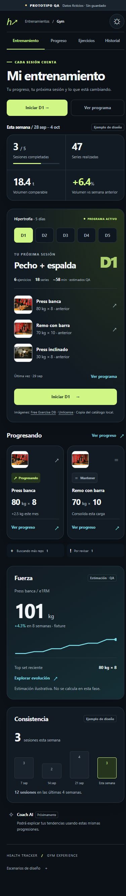
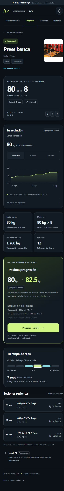
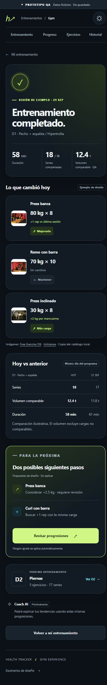
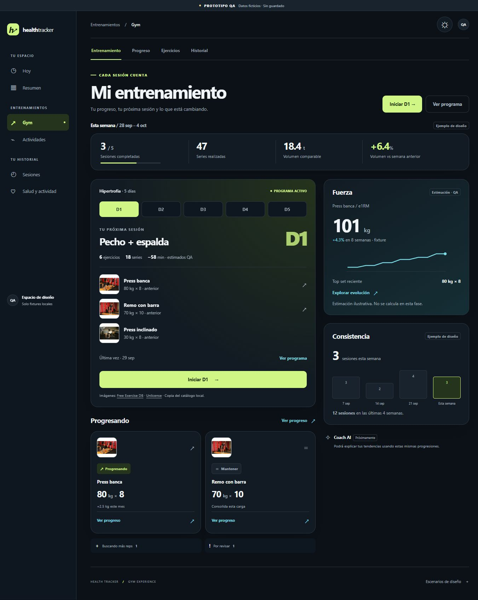
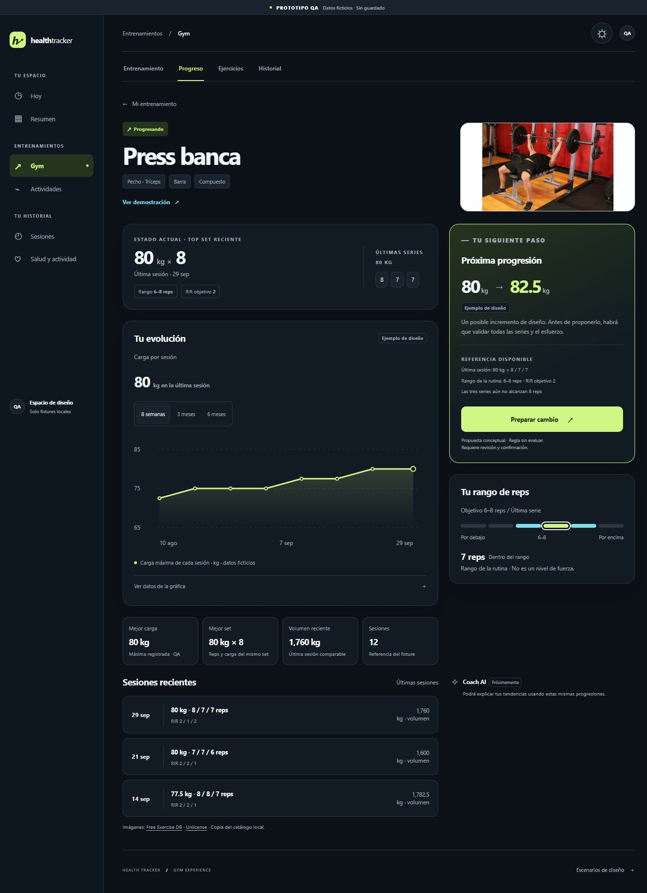
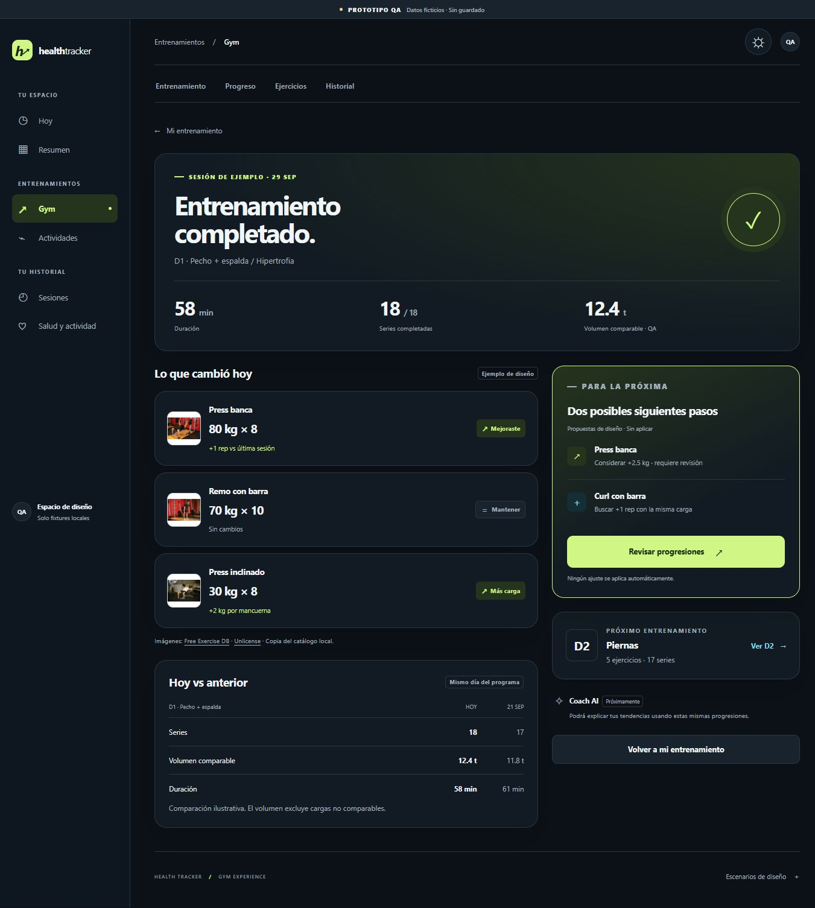

01
Mi entrenamiento


Sesión + progresoAbrir completa ↗
Home, evolución y cierre de sesión. Prototipo UI/UX con datos ficticios.
Las miniaturas muestran la parte superior. «Abrir completa» incluye toda la pantalla y su scroll.






14 gates interactivos PASS · 18 combinaciones responsive PASS · Backend changes = 0 · Aprobación visual PASS · 2026-10-04